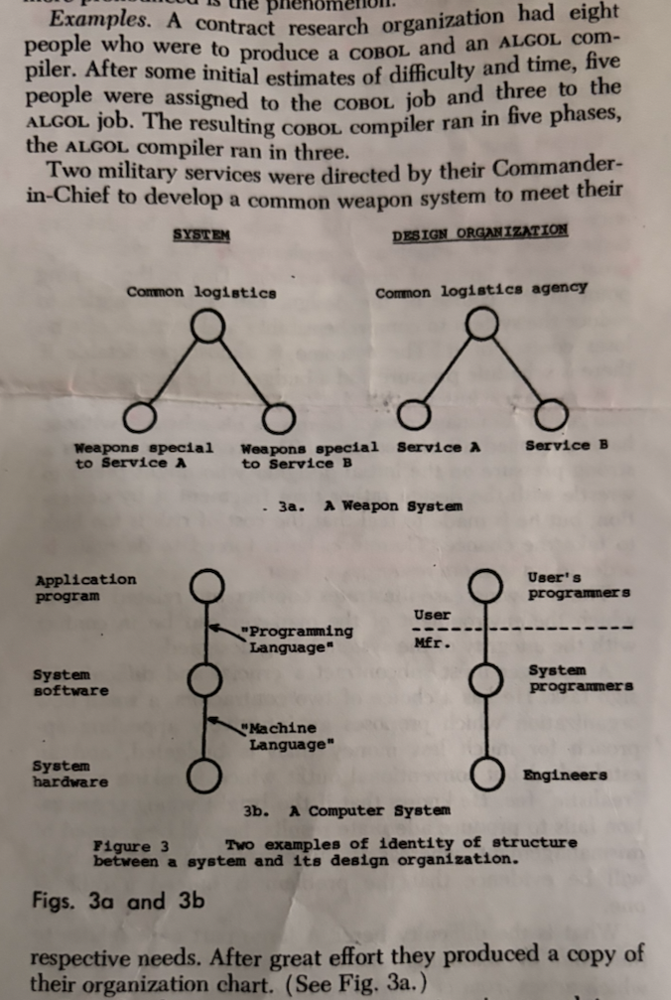

{{ .AndrewPartialFile.head title="How Do Committees Invent?" andrewpublishtime="2026-03-01"}}

<body>
  {{ .AndrewPartialFile.navigation }}
  <article>
    <h1>How Do Committees Invent?</h1>
    <p>
      Hey there -
    </p>

    <p>
      Today I'm writing about "How Do Committees Invent?", the whitepaper that famously contains Conway's Law,
      "organizations which design systems…are constrained to produce designs which are copies of the communication
      structures of these organizations."
    </p>
    <p>
      I want you to read this paper, so let me tell you how the paper addresses your needs as an individual DevOps
      engineer. You'll find the 4 page paper for free at
      <a href="https://melconway.com/Home/pdf/committees.pdf">Committees.pdf</a>
    </p>
    <hr />
    <h2 id="what-is-this-paper-about">What is this paper about?</h2>
    <p>
      Nobody really covers the rest of this bemused, fatalistic, incredible paper. Think about it, have you ever heard
      these quotes?
    </p>
    <blockquote>
      ...the incentives which exist in a conventional management environment can motivate choices which subvert the
      intent of the sponsor...
    </blockquote>
    <blockquote>
      ...Given any design team organization, there is a class of design alternatives which cannot be effectively pursued
      by such an organization because the necessary communication paths do not exist...
    </blockquote>
    <p>
      The paper discusses what motivates individual human beings who are inside corporate comms structures, how the
      politics emerges from good intentions, and how locally self-interested people will constrain the set of choices
      their organisations and companies can make. Here's something you or your boss faces regularly:
    </p>
    <blockquote>
      A manager...will be vulnerable to the charge of mismanagement if he misses his schedule without having applied all
      his resources...This knowledge creates a strong pressure on the initial designer who might prefer to wrestle with
      the design...but he is made to feel that the cost of risk is too high to take the chance.
    </blockquote>
    <p>
      Conway has observed that individuals are forced to make decisions that are non-optimal due to political concerns.
    </p>
    <p>
      Conway ends his paper with advice about how to solve this if you get to design the org structure; he doesn't have
      a mechanism for <em>you</em>, an individual DevOps practitioner, but DevOps does. Conway has noted that the
      problem comes about from very normal motivations in a company, and that this happens because companies want their
      employees to focus, so companies create situations that reduce communication amongst colleagues:
    </p>
    <blockquote>
      The second step in the disintegration of a system design - the fragmentation of the design organization's
      communication structure-begins as soon as delegation has started...the number of possible communication paths in
      an organization is approximately half the square of the number of people in the organization. Even in a moderately
      small organization
      <em>it becomes necessary to restrict communication in order that people can get some "work" done</em>.
    </blockquote>
    <p>
      DevOps directs us to the solution: the DevOps Handbook tells us that culturally when all teams are working on a
      common mission, a communicative, generative culture is the result, and this is the kind of culture that gets
      things done. How do you get people onto that common mission? You often have to personally identify what it is and
      get buy-in.
    </p>
    <p>
      To understand your professional role as a DevOps engineer is to know that you were hired to solve Conway problems.
      You were hired to grow, build, support your company. What if there's clearly no common mission? You cannot get to
      where you're going if you are not willing to start where you are. If you need someone to talk to,
      <a href="/contact/index.html">throw a little time for free on my calendar</a>, I can help out.
    </p>
    <h2 id="the-design-space-defaults-to-the-communication-space-so-change-the-communication-space">
      The Design Space Defaults To The Communication Space, So Change The Communication Space
    </h2>
    <p>
      The left hand graph here is a solution built for the military. The right hand graph is the military's command
      structure. Note that the graphs are the same.
    </p>
    
    <p>
      Conway tells us what's going on, "To the extent that organizational protocol restricts communication along lines
      of command, the communication structure of an organization will resemble its administrative structure. This is one
      reason why military-style organizations design systems which look like their organization charts."
    </p>
    <p>
      Your company's communication structure will by default resemble its administrative structure. Your company's
      designs will resemble the communication structure.
    </p>
    <p>
      You will note that you talk inside your team far more than outside your team; your team lead communicates inside
      their own org far more than with team leads outside their org. That's what Conway's identifying: when this happens
      at scale, communications start shrinking, and Conway already taught us, "there is a class of design alternatives
      which cannot be effectively pursued by such an organization because the necessary communication paths do not
      exist."
    </p>
    <h3>What's your role, though?</h3>
    <p>
      DevOps gives you permission to be a guerilla force resisting an asymmetrical foe, with a professional claim to
      improving communication amongst teams. There are ten thousand tricks for this. I talked about some of them in my
      conference talk <a href="/public-speaking/index.html">"DevOps in a Rocket Factory"</a>. Your goal is to open
      communications back up, so that the teams start communicating more, collaborating with your team.
    </p>
    <p>
      Start by improving your relationships with people, maybe by offering needed cultural touchpoints, like a tech geek
      book club or an ERG, or by writing lunch & learns and giving them. Invite your teammates to lunch; invite another
      team to lunch! This sort of work requires patience: it's a snowball gathering momentum, not a sledgehammer
      shattering a wall.
    </p>
    <p>
      Conway's Law gets used as a permission slip to redraw the org chart, but that's a pray-and-spray move that ignores
      most of Conway's observations. The majority of the paper is Conway telling us
      <em>our daily relationship maintenance matters.</em>
      Skip it and you end up in a rotten borough of your own making, complaining nobody taking your team's expertise
      into account, nobody's fixing the communications thing that you yourself are not maintaining.
    </p>
    <p>
      Conway grounds us in the truth that human beings are the core of things. Your communication is like your tech
      stacks, it needs regular effort and maintenance. If you pin your containers to the <code>latest</code> label you
      get a very unstable system very quickly, inertia creeps in, your stack gets out of date and starts slowing people
      down. Speeding it back up requires effort, design, you have to be writing tests and start continuous integration.
    </p>
    <p>
      Our communication's just like that: try and leave it on cruise control and it falls apart. We all too often pin
      our communication to silence, and then relationships start to decay slowly, one lunch-by-yourself-at-your-desk at
      a time. Doing nothing is the same as tearing it down, entropy is universal. Fixing communication is uncomfortable
      work, asking about people you haven't talked to regularly feels artificial, but it snowballs.
    </p>
    <p>
      Communication is a habit; good habits chip away slowly at the large problem in front of you.
    </p>
    <h2>So that's what it's about.</h2>
    <p>
      That's what Conway's whitepaper is about. It identifies many small communication problems, thinks them through to
      their logical conclusion, provides a little entertainment along the way.
    </p>
    <h2 id="an-anecdotal-conclusion">An Anecdotal Conclusion</h2>
    <p>
      I was chatting with someone after a conference talk. He told me that he had been building build jobs and
      automations his IT team needed, but that team just wouldn't adopt his tools and see that the approach was better,
      faster, more repeatable. He asked me if I had any ideas for how to get his more automation-based approach to land
      with the team.
    </p>
    <p>
      I spent a minute or two figuring out he was doing good engineering, so that wasn't the problem. I focused on
      Conway's Law and asked, "When was the last time you all had lunch or a drink together?" His answer was never.
    </p>
    <p>
      I asked him to have a little faith in me: he should start tackling his problem by inviting his IT team to lunch. I
      advised him not to talk about his agenda, he should just talk, learn who has kids, learn what everyone's
      interested in; they're all interested in tech so that'll naturally come up, don't try and lead the conversation
      there. Just wait until they start talking about what's stressing them out about their jobs. Just treat them like
      people for a while.
    </p>
    <p>
      I checked in over LinkedIn a few months later. He didn't understand it, but without any apparent effort he had
      found that his automations were being adopted.
    </p>
    <p>
      <em>He had done DevOps.</em> The effort was there, it was just hidden in lunches, in checking in with people, in
      saying hello. As a DevOps Engineer, you succeed when you treat your problems as human-being problems; Conway told
      us why this works, and that's why you should read his paper. Once again, you'll find the 4 page paper for free at
      <a href="https://melconway.com/Home/pdf/committees.pdf">Committees.pdf</a>
    </p>
  </article>
</body>
